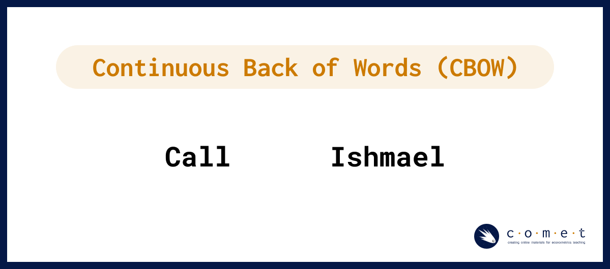
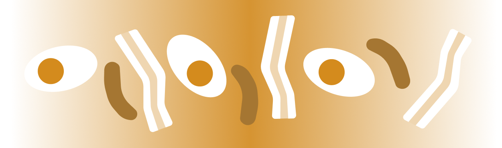

Introduction to Word Embeddings and Language Models
R Version
This notebook was prepared by Laura Nelson in collaboration with UBC COMET team members: Jonathan Graves, Angela Chen and Anneke Dresselhuis
Prerequisites
Some familiarity programming in R
Some familarity with natural language processing
No computational text experience necessary!
Learning outcomes
In the notebook you will
Familiarize yourself with concepts such as word embeddings (WE) vector-space model of language, natural language processing (NLP) and how they relate to small and large language models (LMs)
Import and pre-process a textual dataset for use in word embedding
Use word2vec to build a simple language model for examining patterns and biases textual datasets
Identify and select methods for saving and loading models
Use critical and reflexive thinking to gain a deeper understanding of how the inherent social and cultural biases of language are reproduced and mapped into language computation models
Outline
The goal of this notebook is to demystify some of the technical aspects of language models and to invite learners to start thinking about how these important tools function in society.
In particular, this lesson is designed to explore features of word embeddings produced through the word2vec model. The questions we ask in this lesson are guided by Ben Schmidt’s blog post, Rejecting the Gender Binary.
The primary corpus we will use consists of the 150 English-language novels made available by the .txtLab at McGill University. We also look at a Word2Vec model trained on the ECCO-TCP corpus of 2,350 eighteenth-century literary texts made available by Ryan Heuser. (Note that the number of terms in the model has been shortened by half in order to conserve memory.)
Key Terms
Before we dive in, feel free to familiarize yourself with the following key terms and how they relate to each other.
Artificial Intelligence (AI): this term is a broad category that includes the study and development of computer systems that can copy intelligent human behaviour (adapted from Oxford Learners Dictionary)
Machine Learning (ML): this is branch of AI which is uses statistical methods to imitate the way that humans learn (adapted from IBM)
Natural Language Processing (NLP): this is branch of AI which focuses on training computers to interpret human text and spoken words (adapted from IBM)
Word Embeddings (WE): this is an NLP process through which human words are converted into numerical representations (usually vectors) in order for computers to be able to understand them (adapted from Turing)
word2vec: this is an NLP technique that is commonly used to generate word embeddings
What are Word Embeddings?
Building off of the definition above, word embeddings are one way that humans can represent language in a way that is legible to a machine. More specifically, they are an NLP approach that use vectors to store textual data in multiple dimensions; by existing in the multi-dimensional space of vectors, word embeddings are able to include important semantic information within a given numeric representation.
For example, if we are trying to answer a research question about how popular a term is on the web at a given time, we might use a simple word frequency analysis to count how many times the word “candidate” shows up in tweets during a defined electoral period. However, if we wanted to gain a more nuanced understanding of what kind of language, biases or attitudes contextualize the term, “candidate” in discourse, we would need to use a method like word embedding to encode meaning into our understanding of how people have talked about candidates over time. Instead of describing our text as a series of word counts, we would treat our text like coordinates in space, where similar words and concepts are closer to each other, and words that are different from each other are further away.
Comparing word frequency count and word embedding methods
For example, in the visualization above, a word frequency count returns the number of times the word “candidate” or “candidates” is used in a sample text corpus. When a word embedding is made from the same text corpus, we are able to map related concepts and phrases that are closely related to “candidate” as neighbours, while other words and phrases such as “experimental study” (which refers to the research paper in question, and not to candidates specifically) are further away.
Here is another example of how different, but related words might be represented in a word embedding:
Making a Word Embedding
So, how do word embeddings work? To make a word embedding, an input word gets compressed into a dense vector.
Creating a word embedding vector
The magic and mystery of the word embedding process is that often the vectors produced during the model embed qualities of a word or phrase that are not interpretable by humans. However, for our purposes, having the text in vector format is all we need. With this format, we can perform tests like cosine similarity and other kinds of operations. Such operations can reveal many different kinds of relationships between words, as we’ll examine a bit later.
Using word2vec
Word2vec is one NLP technique that is commonly used to generate word embeddings. More precisely, word2vec is an algorithmic learning tool rather than a specific neural net that is already trained. The example we will be working through today has been made using this tool.
The series of algorithms inside of the word2vec model try to describe and acquire parameters for a given word in terms of the text that appear immediately to the right and left in actual sentences. Essentially, it learns how to predict text.
Without going too deep into the algorithm, suffice it to say that it involves a two-step process:
First, the input word gets compressed into a dense vector, as seen in the simplified diagram, “Creating a Word Embedding,” above.
Second, the vector gets decoded into the set of context words. Keywords that appear within similar contexts will have similar vector representations in between steps.
Imagine that each word in a novel has its meaning determined by the ones that surround it in a limited window. For example, in Moby Dick’s first sentence, “me” is paired on either side by “Call” and “Ishmael.” After observing the windows around every word in the novel (or many novels), the computer will notice a pattern in which “me” falls between similar pairs of words to “her,” “him,” or “them.” Of course, the computer had gone through a similar process over the words “Call” and “Ishmael,” for which “me” is reciprocally part of their contexts. This chaining of signifiers to one another mirrors some of humanists’ most sophisticated interpretative frameworks of language.
The two main model architectures of word2vec are Continuous Bag of Words (CBOW) and Skip-Gram, which can be distinguished partly by their input and output during training.
CBOW takes the context words (for example, “Call”,“Ishmael”) as a single input and tries to predict the word of interest (“me”).

Skip-Gram does the opposite, taking a word of interest as its input (for example, “me”) and tries to learn how to predict its context words (“Call”,“Ishmael”).
In general, CBOW is is faster and does well with frequent words, while Skip-Gram potentially represents rare words better.
Since the word embedding is a vector, we are able perform tests like cosine similarity (which we’ll learn more about in a bit!) and other kinds of operations. Those operations can reveal many different kinds of relationships between words, as we shall see.
Bias and Language Models
You might already be piecing together that the encoding of meaning in word embeddings is entirely shaped by patterns of language use captured in the training data. That is, what is included in a word embedding directly reflects the complex social and cultural biases of everyday human language - in fact, exploring how these biases function and change over time (as we will do later) is one of the most interesting ways to use word embeddings in social research.
It is simply impossible to have a bias-free language model (LM).
In LMs, bias is not a bug or a glitch, rather, it is an essential feature that is baked into the fundamental structure. For example, LMs are not outside of learning and absorbing the pejorative dimensions of language which in turn, can result in reproducing harmful correlations of meaning for words about race, class or gender (among others). When unchecked, these harms can be “amplified in downstream applications of word embeddings” (Arseniev-Koehler & Foster, 2020, p. 1).
Just like any other computational model, it is important to critically engage with the source and context of the training data. One way that Schiffers, Kern and Hienert suggest doing this is by using domain specific models (2023). Working with models that understand the nuances of your particular topic or field can better account for “specialized vocabulary and semantic relationships” that can help make applications of WE more effective.
Preparing for our Analysis
Word2vec Features
Here are a few features of the word2vec tool that we can use to customize our analysis:
size: Number of dimensions for word embedding model
window: Number of context words to observe in each direction
min_count: Minimum frequency for words included in model
alpha: Learning rate (initial); prevents model from over-correcting, enables finer tuning
iterations: Number of passes through dataset
batch size: Number of words to sample from data during each pass
Note: the script uses default value for each argument.
Some limitations of the word2vec Model
Within word2vec, common articles or conjunctions, called stop words such as “the” and “and,” may not provide very rich contextual information for a given word, and may need additional subsampling or to be combined into a word phrase (Anwla, 2019).
Word2vec isn’t always the best at handling out-of-vocabulary words well (Chandran, 2021).
Let’s begin our analysis!
Exercise #1: Eggs, Sausages and Bacon

To begin, we are going to install and load a few packages that are necessary for our analysis. Run the code cells below if these packages are not already installed:
# uncomment these by deleting the "#" to install them#install.packages("tidyverse")#install.packages("repr")#install.packages("proxy")#install.packages("scales")#install.packages("tm")#install.packages("MASS")#install.packages("SentimentAnalysis")#install.packages("reticulate")
# Load the required librarieslibrary(tidyverse)library(repr)library(proxy)library(tm)library(scales)library(MASS)# Set up figures to save properlyoptions(jupyter.plot_mimetypes ="image/png")
Warning message:
"package 'reticulate' was built under R version 4.2.3"
Create a Document-Term Matrix (DTM) with a Few Pseudo-Texts
To start off, we’re going to create a mini dataframe based on the use of the words “eggs,” “sausages” and “bacon” found in three different novels: A, B and C.
eggs sausage bacon
Novel A 50 60 60
Novel B 90 10 10
Novel C 20 70 70
Visualize
# Then, we'll create the scatter plot of our data using ggplot2ggplot(dtm, aes(x = eggs, y = sausage)) +geom_point() +geom_text(aes(label =rownames(dtm)), nudge_x =2, nudge_y =2, size =3) +xlim(0, 100) +ylim(0, 100) +labs(x ="eggs", y ="sausage")
Vectors
At a glance, a couple of points are lying closer to one another. We used the word frequencies of just two words in order to plot our texts in a two-dimensional plane. The term frequency “summaries” of Novel A & Novel C are pretty similar to one another: they both share a major concern with “sausage”, whereas Novel B seems to focus primarily on “eggs.”
This raises a question: how can we operationalize our intuition that spatial distance expresses topical similarity?
Cosine Similarity
The most common measurement of distance between points is their Cosine Similarity. Cosine similarity can operate on textual data that contain word vectors and allows us to identify how similar documents are to each other, for example. Cosine Similarity thus helps us understand how much content overlap a set of documents have with one another. For example, imagine that we were to draw an arrow from the origin of the graph - point (0,0) - to the dot representing each text. This arrow is called a vector.
Mathematically, this can be represented as:
Using our example above, we can see that the angle from (0,0) between Novel C and Novel A (orange triangle) is smaller than between Novel A and Novel B (navy triangle) or between Novel C and Novel B (both triangles together).
Because this similarity measurement uses the cosine of the angle between vectors, the magnitude is not a matter of concern (this feature is really helpful for text vectors that can often be really long!). Instead, the output of cosine similarity yields a value between 0 and 1 (we don’t have to work with something confusing like 18º!) that can be easily interpreted and compared - and thus we can also avoid the troubles associated with other dimensional distance measures such as Euclidean Distance.
Calculating Cosine Distance
# Assuming dtm_df is a data frame containing the document-term matrixdtm_matrix <-as.matrix(dtm)# Calculate cosine similaritycos_sim <- proxy::dist(dtm_matrix, method ="cosine")# Although we want the Cosine Distance, it is mathematically simpler to calculate its opposite: Cosine Similarity# The formula for Cosine Distance is = 1 - Cosine Similarity# Convert the cosine similarity matrix to a 2-dimensional array# So we will subtract the similarities from 1n <-nrow(dtm_matrix)cos_sim_array <-matrix(1-as.vector(as.matrix(cos_sim)), n, n)# Print the resultprint(cos_sim_array)
# Make it a little easier to read by rounding the valuescos_sim_rounded <-round(cos_sim_array, 2)# Label the dataframe rows and columns with eggs, sausage and baconcos_df <-data.frame(cos_sim_rounded, row.names = indices, check.names =FALSE)colnames(cos_df) <- indices# Print the data framehead(cos_df)
A data.frame: 3 × 3
Novel A
Novel B
Novel C
<dbl>
<dbl>
<dbl>
Novel A
1.00
0.64
0.95
Novel B
0.64
1.00
0.35
Novel C
0.95
0.35
1.00
Exercise #2: Working with 18th Century Literature
Workshop Run Here at Start
# Load the required librarieslibrary(tidyverse)library(repr)library(proxy)library(tm)library(scales)library(MASS)# Set up figures to save properlyoptions(jupyter.plot_mimetypes ="image/png") # Time: 3 mins# File paths and namesfilelist <-c('txtlab_Novel450_English/EN_1850_Hawthorne,Nathaniel_TheScarletLetter_Novel.txt','txtlab_Novel450_English/EN_1851_Hawthorne,Nathaniel_TheHouseoftheSevenGables_Novel.txt','txtlab_Novel450_English/EN_1920_Fitzgerald,FScott_ThisSideofParadise_Novel.txt','txtlab_Novel450_English/EN_1922_Fitzgerald,FScott_TheBeautifulandtheDamned_Novel.txt','txtlab_Novel450_English/EN_1811_Austen,Jane_SenseandSensibility_Novel.txt','txtlab_Novel450_English/EN_1813_Austen,Jane_PrideandPrejudice_Novel.txt')novel_names <-c('Hawthorne: Scarlet Letter','Hawthorne: Seven Gables','Fitzgerald: This Side of Paradise','Fitzgerald: Beautiful and the Damned','Austen: Sense and Sensibility','Austen: Pride and Prejudice')# Function to read non-empty lines from the text filereadNonEmptyLines <-function(filepath) { lines <-readLines(filepath, encoding ="UTF-8") non_empty_lines <- lines[trimws(lines) !=""]return(paste(non_empty_lines, collapse =" "))}# Read non-empty texts into a corpustext_corpus <-VCorpus(VectorSource(sapply(filelist, readNonEmptyLines)))# Preprocess the text datatext_corpus <-tm_map(text_corpus, content_transformer(tolower))text_corpus <-tm_map(text_corpus, removePunctuation)text_corpus <-tm_map(text_corpus, removeNumbers)text_corpus <-tm_map(text_corpus, removeWords, stopwords("english"))text_corpus <-tm_map(text_corpus, stripWhitespace)## Time: 5 mins# Create a custom control for DTM with binary term frequencycustom_control <-list(tokenize =function(x) SentimentAnalysis::ngram_tokenize(x, ngmax =1),bounds =list(global =c(3, Inf)),weighting = weightTf)# Convert the corpus to a DTM using custom controldtm <-DocumentTermMatrix(text_corpus, control = custom_control)# Convert DTM to a binary data frame (0 or 1)dtm_df_novel <-as.data.frame(as.matrix(dtm >0))colnames(dtm_df_novel) <-colnames(dtm)# Set row names to novel namesrownames(dtm_df_novel) <- novel_names# Print the resulting data frametail(dtm_df_novel)
Warning message in readLines(filepath, encoding = "UTF-8"):
"incomplete final line found on 'txtlab_Novel450_English/EN_1920_Fitzgerald,FScott_ThisSideofParadise_Novel.txt'"
A data.frame: 6 × 7182
—can
—ever
—every
—except
—ill
—just
—let
—like
—may
—nay
⋯
youll
young
younger
youngest
youre
youth
youthful
youths
youve
zeal
<lgl>
<lgl>
<lgl>
<lgl>
<lgl>
<lgl>
<lgl>
<lgl>
<lgl>
<lgl>
⋯
<lgl>
<lgl>
<lgl>
<lgl>
<lgl>
<lgl>
<lgl>
<lgl>
<lgl>
<lgl>
Hawthorne: Scarlet Letter
TRUE
TRUE
FALSE
FALSE
TRUE
FALSE
TRUE
FALSE
TRUE
TRUE
⋯
FALSE
TRUE
TRUE
TRUE
FALSE
TRUE
TRUE
FALSE
FALSE
TRUE
Hawthorne: Seven Gables
FALSE
TRUE
FALSE
TRUE
FALSE
FALSE
FALSE
TRUE
TRUE
TRUE
⋯
TRUE
TRUE
TRUE
TRUE
TRUE
TRUE
TRUE
FALSE
TRUE
TRUE
Fitzgerald: This Side of Paradise
FALSE
TRUE
TRUE
TRUE
TRUE
TRUE
TRUE
TRUE
FALSE
FALSE
⋯
TRUE
TRUE
TRUE
FALSE
TRUE
TRUE
TRUE
TRUE
TRUE
FALSE
Fitzgerald: Beautiful and the Damned
TRUE
FALSE
TRUE
TRUE
TRUE
TRUE
TRUE
TRUE
FALSE
FALSE
⋯
TRUE
TRUE
TRUE
TRUE
TRUE
TRUE
FALSE
TRUE
TRUE
FALSE
Austen: Sense and Sensibility
FALSE
FALSE
TRUE
FALSE
FALSE
FALSE
TRUE
FALSE
TRUE
FALSE
⋯
FALSE
TRUE
TRUE
TRUE
FALSE
TRUE
TRUE
FALSE
FALSE
TRUE
Austen: Pride and Prejudice
TRUE
FALSE
FALSE
FALSE
FALSE
TRUE
FALSE
FALSE
FALSE
TRUE
⋯
TRUE
TRUE
TRUE
TRUE
FALSE
TRUE
FALSE
TRUE
FALSE
FALSE
# Just as we did above with the small data frame, we'll find the cosine similarity for these textscos_sim_novel <-as.matrix(proxy::dist(dtm_df_novel, method ="cosine"))# Convert the cosine similarity matrix to a 2-dimensional arrayn <-nrow(dtm_df_novel)cos_sim_array <-matrix(1-as.vector(as.matrix(cos_sim_novel)), n, n)# Round the cosine similarity matrix to two decimal placescos_sim_novel_rounded <-round(cos_sim_array, 2)# Print the rounded cosine similarity matrixprint(cos_sim_novel_rounded)
# Again, we'll make this a bit more readablecos_df <-data.frame(cos_sim_novel_rounded, row.names = novel_names, check.names =FALSE)# Set column names to novel namescolnames(cos_df) <- novel_names# Print the DataFramehead(cos_df)
A data.frame: 6 × 6
Hawthorne: Scarlet Letter
Hawthorne: Seven Gables
Fitzgerald: This Side of Paradise
Fitzgerald: Beautiful and the Damned
Austen: Sense and Sensibility
Austen: Pride and Prejudice
<dbl>
<dbl>
<dbl>
<dbl>
<dbl>
<dbl>
Hawthorne: Scarlet Letter
1.00
0.80
0.69
0.75
0.68
0.67
Hawthorne: Seven Gables
0.80
1.00
0.74
0.80
0.71
0.70
Fitzgerald: This Side of Paradise
0.69
0.74
1.00
0.79
0.63
0.62
Fitzgerald: Beautiful and the Damned
0.75
0.80
0.79
1.00
0.70
0.69
Austen: Sense and Sensibility
0.68
0.71
0.63
0.70
1.00
0.81
Austen: Pride and Prejudice
0.67
0.70
0.62
0.69
0.81
1.00
# Transform cosine similarity to cosine distancecos_dist <-1- cos_sim_novel_rounded# Perform MDSmds <-cmdscale(cos_dist, k =2)# Extract x and y coordinates from MDS outputxs <- mds[, 1]ys <- mds[, 2]# Create a data frame with x, y coordinates, and novel namesmds_df <-data.frame(x = xs, y = ys, novel_names = novel_names)ggplot(mds_df, aes(x, y, label = novel_names)) +geom_point(size =4) +geom_text(hjust =0.6, vjust =0.2, size =4, angle =45, nudge_y =0.01) +# Rotate text and adjust y positionlabs(title ="MDS Visualization of Novel Differences") +theme_minimal() +theme(plot.title =element_text(size =20, hjust =0.6, margin =margin(b =10)),plot.margin =margin(5, 5, 5, 5, "pt"), # Adjust the margin around the plotplot.background =element_rect(fill ="white"), # Set the background color of the plot to whiteplot.caption =element_blank(), # Remove the default captionaxis.text =element_text(size =12), # Adjust the size of axis textlegend.text =element_text(size =12), # Adjust the size of legend textlegend.title =element_text(size =14) # Adjust the size of legend title )
The above method has a broad range of applications, such as unsupervised clustering. Common techniques include K-Means Clustering and Hierarchical Dendrograms. These attempt to identify groups of texts with shared content, based on these kinds of distance measures.
Here’s an example of a dendrogram based on these six novels:
# Assuming you have already calculated the "cos_dist" matrix and have the "novel_names" vector# Perform hierarchical clusteringhclust_result <-hclust(as.dist(cos_dist), method ="ward.D")# Plot the dendrogramplot(hclust_result, hang =-1, labels = novel_names)# Optional: Adjust the layout to avoid cutoff labelspar(mar =c(5, 4, 2, 10)) # Adjust margins# Display the dendrogram plot
Vector Semantics
We can also turn this logic on its head. Rather than produce vectors representing texts based on their words, we will produce vectors for the words based on their contexts.
# Transpose the DTM data frametransposed_dtm <-t(dtm_df_novel)# Display the first few rows of the transposed DTMtail(transposed_dtm)
A matrix: 6 × 6 of type lgl
Hawthorne: Scarlet Letter
Hawthorne: Seven Gables
Fitzgerald: This Side of Paradise
Fitzgerald: Beautiful and the Damned
Austen: Sense and Sensibility
Austen: Pride and Prejudice
youre
FALSE
TRUE
TRUE
TRUE
FALSE
FALSE
youth
TRUE
TRUE
TRUE
TRUE
TRUE
TRUE
youthful
TRUE
TRUE
TRUE
FALSE
TRUE
FALSE
youths
FALSE
FALSE
TRUE
TRUE
FALSE
TRUE
youve
FALSE
TRUE
TRUE
TRUE
FALSE
FALSE
zeal
TRUE
TRUE
FALSE
FALSE
TRUE
FALSE
Because the number of words is so large, for memory reasons we’re going to work with just the last few, pictured above.
If you are running this locally, you may want to try this with more words
# Assuming dtm_df is a data frame containing the document-term matrixtail_transposed_dtm <-tail(transposed_dtm)dtm_matrix <-as.matrix(tail_transposed_dtm) #remove 'tail_' to use all words# Calculate cosine similaritycos_sim_words <- proxy::dist(dtm_matrix, method ="cosine")# Convert the cosine similarity matrix to a 2-dimensional arrayn <-nrow(dtm_matrix)cos_sim_words <-matrix(1-as.vector(as.matrix(cos_sim_words)), n, n)# Print the resulthead(cos_sim_words)
A matrix: 6 × 6 of type dbl
1.0000000
0.7071068
0.5773503
0.6666667
1.0000000
0.3333333
0.7071068
1.0000000
0.8164966
0.7071068
0.7071068
0.7071068
0.5773503
0.8164966
1.0000000
0.2886751
0.5773503
0.8660254
0.6666667
0.7071068
0.2886751
1.0000000
0.6666667
0.0000000
1.0000000
0.7071068
0.5773503
0.6666667
1.0000000
0.3333333
0.3333333
0.7071068
0.8660254
0.0000000
0.3333333
1.0000000
# In readable formatcos_sim_words <-data.frame(round(cos_sim_words, 2))row.names(cos_sim_words) <-row.names(tail_transposed_dtm) #remove tail_ for allcolnames(cos_sim_words) <-row.names(tail_transposed_dtm) #remove tail_ for allhead(cos_sim_words)
A data.frame: 6 × 6
youre
youth
youthful
youths
youve
zeal
<dbl>
<dbl>
<dbl>
<dbl>
<dbl>
<dbl>
youre
1.00
0.71
0.58
0.67
1.00
0.33
youth
0.71
1.00
0.82
0.71
0.71
0.71
youthful
0.58
0.82
1.00
0.29
0.58
0.87
youths
0.67
0.71
0.29
1.00
0.67
0.00
youve
1.00
0.71
0.58
0.67
1.00
0.33
zeal
0.33
0.71
0.87
0.00
0.33
1.00
Theoretically we could visualize and cluster these as well - but it would a lot of computational power!
We’ll instead turn to the machine learning version: word embeddings
#check objects in memory; delete the big onessort(sapply(ls(), function(x) format(object.size(get(x)), unit ='auto')))rm(cos_sim_words, cos_sim_array, text_corpus, dtm_df_novel)sort(sapply(ls(), function(x) format(object.size(get(x)), unit ='auto')))
filelist
'1.1 Kb'
dtm_df_novel
'1.1 Mb'
dtm_matrix
'1.5 Kb'
tail_transposed_dtm
'1.5 Kb'
mds_df
'1.6 Kb'
cos_sim_novel
'1.9 Kb'
custom_control
'14.6 Kb'
cos_sim_words
'2 Kb'
hclust_result
'2.1 Kb'
text_corpus
'2.1 Mb'
cos_sim
'2.2 Kb'
cos_df
'2.3 Kb'
readNonEmptyLines
'23.9 Kb'
columns
'248 bytes'
indices
'248 bytes'
cos_sim_rounded
'344 bytes'
gensim
'392 bytes'
cos_dist
'504 bytes'
cos_sim_array
'504 bytes'
cos_sim_novel_rounded
'504 bytes'
mds
'520 bytes'
n
'56 bytes'
novel_names
'608 bytes'
transposed_dtm
'642.5 Kb'
dtm
'954.9 Kb'
xs
'96 bytes'
ys
'96 bytes'
Exercise #3: Using Word2vec with 150 English Novels
In this exercise, we’ll use an English-language subset from a dataset about novels created by Andrew Piper. Specifically we’ll look at 150 novels by British and American authors spanning the years 1771-1930. These texts reside on disk, each in a separate plaintext file. Metadata is contained in a spreadsheet distributed with the novel files.
Metadata Columns
Filename: Name of file on disk
ID: Unique ID in Piper corpus
Language: Language of novel
Date: Initial publication date
Title: Title of novel
Gender: Authorial gender
Person: Textual perspective
Length: Number of tokens in novel
Import Metadata
# Import Metadata into Dataframemeta_df <-read.csv('resources/txtlab_Novel450_English.csv', encoding ='UTF-8')
# Set the path to the 'fiction_folder'fiction_folder <-"txtlab_Novel450_English/"# Create a list to store the file pathsfile_paths <-list.files(fiction_folder, full.names =TRUE)# Read all the files as a list of single stringsnovel_list <-lapply(file_paths, function(filepath) {readChar(filepath, file.info(filepath)$size)})
# Inspect first item in novel_listcat(substr(novel_list[[1]], 1, 500))
CASTLE RACKRENT
by Maria Edgeworth
AUTHOR'S PREFACE
The Prevailing taste of the public for anecdote has been censured and ridiculed by critics who aspire to the character of superior wisdom; but if we consider it in a proper point of view, this taste is an incontestable proof of the good sense and profoundly philosophic temper of the present times. Of the numbers who study, or at least who read history, how few derive any advantage from their labours! The heroes of history are so de
Pre-Processing
Word2Vec learns about the relationships among words by observing them in context. This means that we want to split our texts into word-units. However, we want to maintain sentence boundaries as well, since the last word of the previous sentence might skew the meaning of the next sentence.
Since novels were imported as single strings, we’ll first need to divide them into sentences, and second, we’ll split each sentence into its own list of words.
# Define a regular expression pattern for sentence splittingsentence_pattern <-"[^.!?]+(?<!\\w\\w\\w\\.)[.!?]"# Split each novel into sentencessentences <-unlist(lapply(novel_list, function(novel) {str_extract_all(novel, sentence_pattern)[[1]]}))
[1] "CASTLE RACKRENT\r\n\r\nby Maria Edgeworth\r\n\r\n\r\n\r\nAUTHOR'S PREFACE\r\n\r\nThe Prevailing taste of the public for anecdote has been censured and ridiculed by critics who aspire to the character of superior wisdom; but if we consider it in a proper point of view, this taste is an incontestable proof of the good sense and profoundly philosophic temper of the present times."
We are defining a function called fast_tokenize, we will be using this function later when we train the word vector model. See example usage for its feature.
fast_tokenize <-function(text) {# Remove punctuation characters no_punct <-gsub("[[:punct:]]", "", tolower(text))# Split text over whitespace into a character vector of words tokens <-strsplit(no_punct, "\\s+")[[1]]return(tokens)}# Example usagetext <-"Hello, world! This is an example sentence."tokens <-fast_tokenize(text)print(tokens)
# Time: 2 mins# Split each sentence into tokens# this will take 1-2 minuteswords_by_sentence <-lapply(sentences, function(sentence) {fast_tokenize(sentence)})
# Remove any sentences that contain zero tokenswords_by_sentence <- words_by_sentence[sapply(words_by_sentence, length) >0]
# Inspect first sentencefirst_sentence_tokens <- words_by_sentence[[1]]print(first_sentence_tokens)
# Time: 3 mins
# Train word2vec model from txtLab corpus
model <- gensim$models$Word2Vec(words_by_sentence, vector_size=100L, window=5L, min_count=25L, sg=1L, alpha=0.025, epochs=5L, batch_words=10000L)
However, this is both very slow and very memory instensive. Instead, we will short-cut here to load the saved results instead:
# Load pre-trained model word2vec model from txtLab corpusmodel <- gensim$models$KeyedVectors$load_word2vec_format('resources/word2vec.txtlab_Novel150_English.txt')model$wv <- gensim$models$KeyedVectors$load_word2vec_format('resources/word2vec.txtlab_Novel150_English.txt')
Embeddings
Note: the output here is different than the Python version, even though the model is using the same parameters and same input, which is sentences
This create a 100-dimension representation of specific words in the text corpus. This is a dense vector, meaning all of the valaues are (usually) non-zero.
# Return dense word vectorvector <- model$wv$get_vector("whale")data.frame(dimension =1:100, value = vector)
A data.frame: 100 × 2
dimension
value
<int>
<dbl>
1
-0.55107111
2
-0.11189298
3
-0.04959059
4
-0.05850497
5
0.28790763
6
-0.80342406
7
-0.07215538
8
0.27215561
9
-0.24760762
10
-0.40519261
11
0.01354405
12
-0.71650523
13
0.17665575
14
0.40048674
15
-0.19900815
16
0.20170024
17
0.26689592
18
-0.07850418
19
0.41761532
20
-0.46563399
21
-0.02264982
22
0.03582832
23
-0.39578339
24
-0.35047379
25
-0.10894601
26
-0.02075713
27
-0.08951025
28
0.63399905
29
-0.22439238
30
-0.04571422
⋮
⋮
71
-0.411359429
72
0.792344272
73
-0.200834081
74
0.008296484
75
0.292287439
76
-0.082145669
77
0.632542729
78
-0.288833410
79
-0.185351834
80
0.623070717
81
-0.233284771
82
0.187108710
83
-0.454192758
84
0.260974020
85
-0.324976146
86
0.066707216
87
0.081604123
88
0.432761550
89
0.345049858
90
0.445526332
91
0.613026440
92
-0.091125637
93
0.102697603
94
0.083106160
95
0.331327826
96
0.235871971
97
-0.039666425
98
0.034904104
99
0.068354718
100
0.002279866
Vector-Space Operations
The key advantage of the word-embedding is the dense vector representations of words: these allow us to do operations on those words, which are informative for learning about how those words are used.
This is also where the connection with LLM is created: they use these vectors to inform predictions about sequences of words (and sentences, in more complex models)
Similarity
Since words are represented as dense vectors, we can ask how similiar words’ meanings are based on their cosine similarity (essentially how much they overlap). gensim has a few out-of-the-box functions that enable different kinds of comparisons.
# Find cosine distance between two given word vectorssimilarity <- model$wv$similarity("pride", "prejudice")similarity
0.59162300825119
# Find nearest word vectors by cosine distancemost_similar <- model$wv$most_similar("pride")most_similar
'unworthiness'
0.708338558673859
'vanity'
0.70763099193573
'hardihood'
0.703833639621735
'heroism'
0.702945291996002
'selfishness'
0.69848620891571
'egotism'
0.698321938514709
'unselfishness'
0.69433867931366
'arrogance'
0.693523764610291
'selfconceit'
0.690157413482666
'timidity'
0.69000643491745
# Given a list of words, we can ask which doesn't belong# Finds mean vector of words in list# and identifies the word further from that meandoesnt_match <- model$wv$doesnt_match(c('pride', 'prejudice', 'whale'))doesnt_match
'whale'
Multiple Valences
A word embedding may encode both primary and secondary meanings that are both present at the same time. In order to identify secondary meanings in a word, we can subtract the vectors of primary (or simply unwanted) meanings. For example, we may wish to remove the sense of river bank from the word bank. This would be written mathetmatically as RIVER - BANK, which in gensim’s interface lists RIVER as a positive meaning and BANK as a negative one.
# Get most similar words to BANK, in order# to get a sense for its primary meaningmost_similar <- model$wv$most_similar("bank")most_similar
'river'
0.711162984371185
'creek'
0.68317973613739
'shore'
0.676563084125519
'cove'
0.675664663314819
'ferryboat'
0.671000003814697
'thames'
0.669983685016632
'margin'
0.669341504573822
'banks'
0.665800094604492
'hanger'
0.663011133670807
'wharf'
0.660356998443604
# Remove the sense of "river bank" from "bank" and see what is leftresult <- model$wv$most_similar(positive ="bank", negative ="river")result
'unpaid'
0.373251676559448
'fee'
0.370019376277924
'cheque'
0.359555840492249
'embezzlement'
0.357363700866699
'deposit'
0.351018667221069
'salary'
0.35058805346489
'cash'
0.350180208683014
'mortgage'
0.34438681602478
'cowperwoods'
0.344247430562973
'purchase'
0.342276871204376
Analogy
Analogies are rendered as simple mathematical operations in vector space. For example, the canonic word2vec analogy MAN is to KING as WOMAN is to ?? is rendered as KING - MAN + WOMAN. In the gensim interface, we designate KING and WOMAN as positive terms and MAN as a negative term, since it is subtracted from those.
# Get most similar words to KING, in order# to get a sense for its primary meaningmost_similar <- model$wv$most_similar("king")most_similar
'duke'
0.795354425907135
'prince'
0.745972692966461
'otho'
0.7265864610672
'governor'
0.714816331863403
'kings'
0.695792615413666
'justicer'
0.693355023860931
'commanderinchief'
0.679358124732971
'minister'
0.677222430706024
'emperor'
0.669488191604614
'wizard'
0.668773353099823
# The canonic word2vec analogy: King - Man + Woman -> Queenresult <- model$wv$most_similar(positive =c("woman", "king"), negative ="man")result
'queen'
0.748667359352112
'princess'
0.717491209506989
'nun'
0.671820759773254
'duchess'
0.663877904415131
'dunstan'
0.644907355308533
'helena'
0.642244577407837
'duke'
0.628719568252563
'ruritania'
0.626859545707703
'bride'
0.622037887573242
'lomellino'
0.621977627277374
Gendered Vectors
Can we find gender a la Schmidt (2015)? (Note that this method uses vector projection, whereas Schmidt had used rejection.)
# Note: due to some discrepencies between Python and R, this may not be translated exactly# Dictionary of words in modelkey_to_index <- model$wv$key_to_index #this stores the index of each word in the modelhead(key_to_index)
[[1]]
0
$the
1
$and
2
$of
3
$to
4
$a
5
# Visualizing the whole vocabulary would make it hard to readkey_to_index <- model$wv$key_to_index# Get the number of unique words in the vocabulary (vocabulary size)vocabulary_size <-length(key_to_index)# Find most similar tokenssimilarity_result <- model$wv$most_similar(positive =c("she", "her", "hers", "herself"),negative =c("he", "him", "his", "himself"),topn =as.integer(50)) # Convert to integer# Extract tokens from the resulther_tokens <-sapply(similarity_result, function(item) item[1])
# Get the vector for each sampled wordfor (i in1:length(her_tokens)){if (i ==1) { vectors_matrix <- model$wv$get_vector(i) } else { vectors_matrix <-rbind(vectors_matrix, model$wv$get_vector(i)) } }# Print the vectors matrixhead(vectors_matrix, n =5)
A matrix: 5 × 100 of type dbl
vectors_matrix
-0.164372221
-0.38773462
-0.2130798
0.41665018
0.02410618
-0.107125707
0.307273984
0.28564280
0.2715282
-0.327854037
⋯
0.4036772
0.14915662
-0.1626078
0.12744740
0.01248535
0.17607456
0.20136480
0.1819378
0.04222544
-0.24934696
-0.065820746
-0.12796637
-0.2873217
0.42668524
-0.06666858
-0.007423899
0.104129203
0.24035919
0.3227733
0.079232000
⋯
0.3743587
0.18379794
-0.1555339
0.11449512
0.15484981
0.31406885
0.10346644
0.1664640
-0.02670373
0.08958896
-0.173108056
-0.23349242
-0.3337364
0.52003533
0.02572873
0.155899152
0.015297468
0.24247384
0.4837905
-0.271475226
⋯
0.4194319
0.01373206
-0.2074297
0.28052822
0.32765883
0.24123329
0.05743676
0.3165979
0.05609949
0.12584604
0.008542553
-0.14920798
-0.4998134
0.01760557
-0.06008903
-0.137234181
-0.009309157
0.55716687
0.2954606
0.008222442
⋯
0.5059068
0.10258362
-0.1766499
0.08460002
0.30808648
-0.07576953
0.34530997
0.2536414
0.02444013
0.29884085
-0.007914007
-0.03502264
-0.2320040
0.21818842
-0.19631991
-0.308243692
0.335247397
-0.02742659
-0.2193182
-0.375521600
⋯
0.5412616
0.16568597
-0.6304066
0.24741997
0.05831535
0.15146731
-0.10526822
0.2664579
0.18843265
-0.04899420
# Calculate distances among texts in vector spacedist_matrix <-as.matrix(proxy::dist(vectors_matrix, by_rows =TRUE, method ="cosine"))# Print the distance matrixhead(dist_matrix, n =5)
A matrix: 5 × 50 of type dbl
vectors_matrix
⋯
vectors_matrix
0.0000000
0.2441613
0.2900885
0.4458981
0.3274742
0.5704110
0.3381941
0.4577147
0.4616800
0.3537493
⋯
0.4658162
0.6834794
0.5143328
0.6211871
0.6248492
0.5446319
0.4857980
0.4913255
0.6659446
0.5421133
0.2441613
0.0000000
0.2846745
0.3217170
0.3633957
0.5425751
0.2804803
0.4106063
0.3684607
0.3231126
⋯
0.5097263
0.6066301
0.5668863
0.6740949
0.6108461
0.5825670
0.4197837
0.4204383
0.6546490
0.4473855
0.2900885
0.2846745
0.0000000
0.4830998
0.4234558
0.6048161
0.3192316
0.4587693
0.5530774
0.3821435
⋯
0.5454395
0.6874075
0.5782254
0.6966508
0.6461577
0.6198037
0.5841212
0.4758906
0.6951999
0.5767591
0.4458981
0.3217170
0.4830998
0.0000000
0.4783881
0.4822524
0.4423674
0.5075588
0.4510846
0.3553763
⋯
0.5372513
0.5227030
0.6263146
0.5838267
0.6114745
0.6201524
0.4680030
0.5209680
0.5027610
0.5204974
0.3274742
0.3633957
0.4234558
0.4783881
0.0000000
0.5708173
0.4317533
0.4763607
0.5012079
0.3991493
⋯
0.4914817
0.6223874
0.5817080
0.6721718
0.6091934
0.5512868
0.5899895
0.5255242
0.6948704
0.5963310
# Multi-Dimensional Scaling (Project vectors into 2-D)# Perform Multi-Dimensional Scaling (MDS)mds <-cmdscale(dist_matrix, k =2)# Print the resulting MDS embeddingshead(mds)
A matrix: 6 × 2 of type dbl
vectors_matrix
-0.22409723
0.08093873
-0.21332498
0.08532053
-0.28188636
-0.01665760
-0.01525136
0.05774135
-0.13399081
0.05947442
0.25412585
0.07946914
plot_data <-data.frame(x = mds[, 1], y = mds[, 2], label =unlist(her_tokens))# Create the scatter plot with text labels using ggplot2p <-ggplot(plot_data, aes(x = x, y = y, label = label)) +geom_point(alpha =0) +geom_text(nudge_x =0.02, nudge_y =0.02) +theme_minimal()# Print the plotprint(p)
# For comparison, here is the same graph using a masculine-pronoun vector# Find most similar tokenssimilarity_result <- model$wv$most_similar(negative =c("she", "her", "hers", "herself"),positive =c("he", "him", "his", "himself"),topn =as.integer(50)) # Convert to integerhis_tokens <-sapply(similarity_result, function(item) item[1])# Get the vector for each sampled wordfor (i in1:length(his_tokens)){if (i ==1) { vectors_matrix <- model$wv$get_vector(i) } else { vectors_matrix <-rbind(vectors_matrix, model$wv$get_vector(i)) } }dist_matrix <-as.matrix(proxy::dist(vectors_matrix, by_rows =TRUE, method ="cosine"))mds <-cmdscale(dist_matrix, k =2)plot_data <-data.frame(x = mds[, 1], y = mds[, 2], label =unlist(his_tokens))# Create the scatter plot with text labels using ggplot2p <-ggplot(plot_data, aes(x = x, y = y, label = label)) +geom_point(alpha =0) +geom_text(nudge_x =0.02, nudge_y =0.02) +theme_minimal()# Print the plotprint(p)
### Questions: What kinds of semantic relationships exist in the diagram above?
Are there any words that seem out of place?
3. Saving/Loading Models
# Save current model for later usemodel$wv$save_word2vec_format('resources/word2vec.txtlab_Novel150_English.txt')
# Load up models from disk# Model trained on Eighteenth Century Collections Online corpus (~2500 texts)# Made available by Ryan Heuser: http://ryanheuser.org/word-vectors-1/ecco_model <- gensim$models$KeyedVectors$load_word2vec_format('resources/word2vec.ECCO-TCP.txt')
# What are similar words to BANK?ecco_model$most_similar('bank')
'ground'
0.657000720500946
'turf'
0.656409680843353
'surface'
0.648072481155396
'declivity'
0.642420768737793
'hill'
0.637111485004425
'bridge'
0.633224129676819
'terrace'
0.630118608474731
'channel'
0.629577100276947
'banks'
0.629473924636841
'wall'
0.62891036272049
# What if we remove the sense of "river bank"?ecco_model$most_similar(positive =list('bank'), negative =list('river'))
'currency'
0.367142558097839
'suit'
0.359229028224945
'stamp'
0.358203798532486
'promissory'
0.356053054332733
'pension'
0.351832240819931
'blank'
0.351817756891251
'payable'
0.34270504117012
'mortality'
0.342624574899673
'weekly'
0.340806037187576
'weal'
0.33093598484993
Exercises!
See if you can attempt the following exercises on your own!
## EX. Use the most_similar method to find the tokens nearest to 'car' in either model.## Do the same for 'motorcar'.## Q. What characterizes these two words inthe corpus? Does this make sense?model$wv$most_similar("car")
'hansom'
0.750069677829742
'taxi'
0.747884094715118
'cars'
0.739487826824188
'buggy'
0.737066686153412
'wagon'
0.736345946788788
'motor'
0.732464134693146
'omnibus'
0.727235496044159
'bus'
0.718657851219177
'cab'
0.711317777633667
'sled'
0.704099357128143
model$wv$most_similar('motorcar')
'haha'
0.78786438703537
'laundry'
0.762444496154785
'hoop'
0.762144804000854
'hallway'
0.747283399105072
'taxi'
0.745568156242371
'slowed'
0.743111431598663
'broom'
0.740418314933777
'latchkey'
0.739296555519104
'joness'
0.739260911941528
'shack'
0.738708138465881
## EX. How does our model answer the analogy: MADRID is to SPAIN as PARIS is to __________## Q. What has our model learned about nation-states?model$wv$most_similar(positive =c('paris', 'spain'), negative =c('madrid'))
'france'
0.726611733436584
'europe'
0.703520655632019
'england'
0.690242648124695
'rome'
0.684619128704071
'italy'
0.680796921253204
'germany'
0.674243807792664
'greece'
0.636934578418732
'london'
0.613241791725159
'america'
0.5939120054245
'india'
0.583802223205566
## EX. Perform the canonic Word2Vec addition again but leave out a term:## Try 'king' - 'man', 'woman' - 'man', 'woman' + 'king'## Q. What do these indicate semantically?model$wv$most_similar(positive =c('woman'), negative =c('man'))
'maiden'
0.495520412921906
'louisa'
0.480717837810516
'adorable'
0.478279560804367
'charms'
0.46611225605011
'lover'
0.466060787439346
'maid'
0.44939324259758
'flora'
0.447085440158844
'jane'
0.447046309709549
'lucilla'
0.432486563920975
'innocent'
0.431819051504135
## EX. Heuser's blog post explores an analogy in eighteenth-century thought that## RICHES are to VIRTUE what LEARNING is to GENIUS. How true is this in## the ECCO-trained Word2Vec model? Is it true in the one we trained?## Q. How might we compare word2vec models more generally?
# ECCO model: RICHES are to VIRTUE what LEARNING is to ??ecco_model$most_similar(positive =c('learning', 'virtue'), negative =c('riches'))
'piety'
0.737276077270508
'morality'
0.726690053939819
'science'
0.697470963001251
'prudence'
0.685539543628693
'philosophy'
0.683079183101654
'wisdom'
0.651139199733734
'genius'
0.650582015514374
'humanity'
0.640283465385437
'modesty'
0.63694030046463
'morals'
0.634059965610504
# txtLab model: RICHES are to VIRTUE what LEARNING is to ??model$wv$most_similar(positive =c('learning', 'virtue'), negative =c('riches'))
'teaching'
0.597018659114838
'mathematics'
0.586554288864136
'chemistry'
0.571161866188049
'poetry'
0.559655547142029
'precept'
0.543889999389648
'believer'
0.54315459728241
'deficient'
0.540042698383331
'poetical'
0.540004074573517
'virgil'
0.536787867546082
'yankee'
0.529230773448944
Concluding Remarks and Resources
Throughout this notebook we have seen how a number of mathematical operations can be used to explore word2vec’s word embeddings. Hopefully this notebook has allowed you to see how the inherent biases of language become coded into word embeddings and systems that use word embeddings cannot be treated as search engines.
While getting inside the technics of these computational processes can enable us to answer a set of new, interesting questions dealing with semantics, there are many other questions that remain unanswered.
For example: * Many language models are built using text from large, online corpora (such as Wikipedia, which is known to have a contributor basis that is majority white, college-educated men) - what kind of impact might this have on a language model? * What barriers to the healthy functioning of democracy are created by the widespread use of these tools and technologies in society? * How might language models challenge or renegotiate ideas around copyright, intellectual property and conceptions of authorship more broadly? * What might guardrails look like for the safe and equitable management and deployment of language models?
This notebook has been built using the following materials: - Arseniev-Koehler, A., & Foster, J. G. (2020). Sociolinguistic Properties of Word Embeddings [Preprint]. SocArXiv. https://doi.org/10.31235/osf.io/b8kud - Schiffers, R., Kern, D., & Hienert, D. (2023). Evaluation of Word Embeddings for the Social Sciences (arXiv:2302.06174). arXiv. http://arxiv.org/abs/2302.06174
Anwla, P. K. (2019, October 22). Challenges in word2vec Model. TowardsMachineLearning. https://towardsmachinelearning.org/performance-problems-in-word2vec-model/
Chandran, S. (2021, November 16). Introduction to Text Representations for Language Processing—Part 2. Medium. https://towardsdatascience.com/introduction-to-text-representations-for-language-processing-part-2-54fe6907868